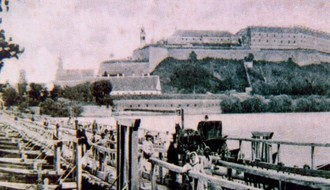

Petrovaradin kroz istoriju
Petrovaradin možemo posmatrati kroz istoriju kao mesto koje je prolazilo kroz razne promene i sama Petrovaradinska tvrdjava koja je sastavni deo Petrovaradina i koja oduvek privlači svojim izgledom i veličinom, kao i neprevazidjena panorama Novi Sad..
Nekada davno... da pođemo od daleke prošlosti, arheološki podaci pokazuju da je na području Petrovaradina postojalo paleolitsko naselje iz perioda 50-45.000 godina p.n.e., a da je od perioda neolita ovo područje konstantno naseljeno. Dominantan položaj Petrovaradinske stene nad rekom Dunav i okolinom oduvek je bio interesantan svim narodima koji su se ovde kraće ili duže zadržavali. Tako, prvo zemljano utvrđenje podižu Kelti, koji se na ovim prostorima pojavljuju u IV veku pre nove ere. Zatim se, u I veku pre nove ere, na ovom području pojavljuju Rimljani, koji ovaj važan strateški punkt organizuju kao svoju tvrđavu (Cusum), koju uključuju u provinciju Panoniju. Potom, nastaje period nestabilnosti i Velike seobe naroda, usled kojeg se ovde smenjuju mnogi narodi, kao što su Huni, Ostrogoti, Gepidi, Langobardi, Avari, Franci i Bugari. Tokom srednjeg veka, područje Petrovaradina postaje poprište borbi za prevlast između Vizantije i Mađara, da bi krajem XII veka, Petrovaradin postao deo srednjovekovne Ugarske.

Iz ovog perioda vladavine Ugarske nad ovim prostorima, potiče i prvi zvaničan istorijski dokument koji govori o postojanju naselja na teritoriji današnjeg Petrovaradina. U pitanju je povelja ugarskog kralja Bele IV iz 1237. godine, u kojoj daruje imanja i sela novoj cistercitskoj opatiji u Belakutu (srednjovekovno utvrđenje na lokaciji današnje Petrovaradinska tvrđava). Vremenom je Petrovaradin postajao sve značajnije naselje, pre svega zbog postojanja skele preko Dunava i vašara koji su posećivali trgovci iz čitave Ugarske.
Najveću opasnost po tadašnje stanovništvo Petrovaradina, predstavljali su Turci Osmanlije, čiji je pravac osvajanja išao prema severozapadu. Po osvajanju Beograda i tokom pohoda na Ugarsku i Beč, Turci su 1526. godine osvojili Petrovaradin, čime otpočinje epoha njihove dominacije na ovom prostoru, duga 161 godinu. Tokom turske vlasti Petrovaradin je imao status sedišta nahije i bio je veoma važna strateška tačka, sa dve ključne saobraćanice u to vreme, Dunavom i Carigradskim drumom. Petrovaradin je tom periodu imao oko 200 kuća, a tu se nalazila Sulejman-hanova džamija, a postojale su i dve manje. Tu su bila i skladišta municije, žitni ambari, mnogi dućani, zanatske radionice, škole, amami, kao i drugi objekti osmanlijske arhitekture. U sastavu grada nalazila se i hrišćanska četvrt sa 35 kuća, naseljenih isključivo Srbima.
Krajem XVII veka, odnosno nakon Velikog bečkog rata i nekoliko katastrofalnih poraza turske vojske, Petrovardin i Srem prelaze u sastav Habzburške monarhije, čineći južnu granicu prema Osmanlijskom carstvu. Nastala je potreba da se Petrovaradin, kao strateški važna tačka u odbrani Habzburške monarhije, značajnije utvrdi. Odmah se krenulo sa rušenjem starih turskih objekata i izradom planova za izgradnju moćnog utvrđenja, čiji će osnovni zadatak biti da zaustavi nova osvajanja Osmanlija na severu. Tvrđava je projektovana i izgrađena po čuvenom Vobanovom sistemu, odnosno u skladu sa najsavremenijim dostignućima fortifikacijske škole tog vremena. Kamen temeljac je u ime cara Leopolda I položen 1692. godine, a ovaj ogroman građevinski poduhvat je izgrađen na tri različita, međusobno povezana visinska nivoa čiju su osnovu činili: Gornja tvrđava (na mestu srednjovekovne tvrđave), Donja tvrđava (ili Donji grad u podnožju) i Dvorožni bastion (Hornverk).
Petrovaradinska tvrdjava
Tvrđava se sastojala iz dva dela - spoljašnjeg i unutrašnjeg. Glavna kapija spoljašnjeg zida koja je imala mali pokretni drveni most sagrađena je tokom XV veka. Ispred spoljnog zida tvrđave nalazio se dubok rov. Spoljni zid je samo sa istočne strane imao sve polukule ojačane potpornim stubovima. Od spoljne kapije vodio je put prema kapiji unutrašnje tvrđave koja je bila pravougaonog oblika. Istočni zid unutrašnje tvrđave je bio zajednički zid sa spoljašnjim zidom. Gde su bili spojeni bio je ojačan polukulama. Ovaj zid je takođe bio pojačan potpornim kosim stubovima a na zapadnoj strani je imao dve polukule kao pojačanje. U sredini unutrašnje tvrđave nalazila se crkva čija je apsida bila okrenuta ka istoku. Sa obe strane crkve nalazili su se okrugli rezervoari za vodu. U severozapadnom delu unutrašnje tvrđave nalazila se komandantova palata. Na levoj obali reke Dunav nalazio se mostobran oko koga je bio rov ispunjen vodom. Na zapadnoj strani zida mostobrana nalazila se kula za artiljerijsku bateriju sa pet otvora za topove. Na severnoj i južnoj strani zida nalazile su se kapije